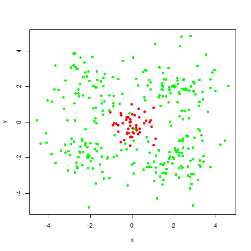
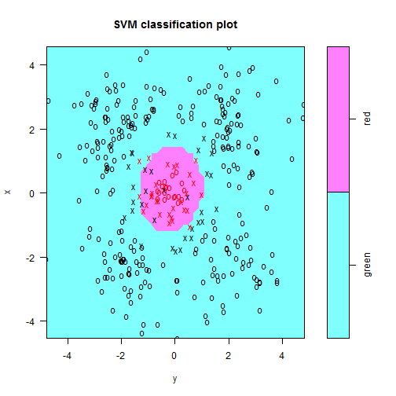
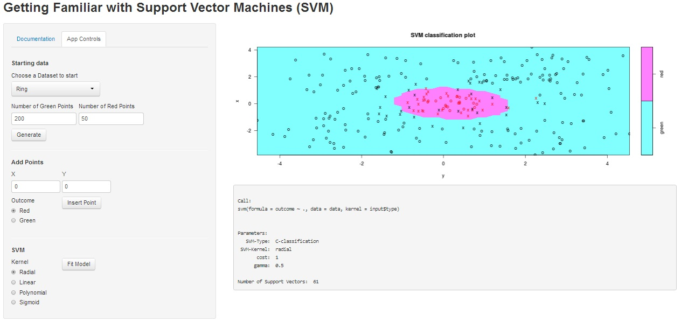

Function "dataring" is included to create a set with red points in the center and the app plots it
data <- dataring(50, 300)
plot(data$x, data$y, col = as.character(data$outcome), pch = 19, xlab = 'x', ylab = "y")

The code to fit and plot the SVM is
library(e1071)
modFit <<- svm(outcome ~., data = data, kernel = "radial")
plot(modFit,data)

The app can be found in my shiny apps webpage

/
#